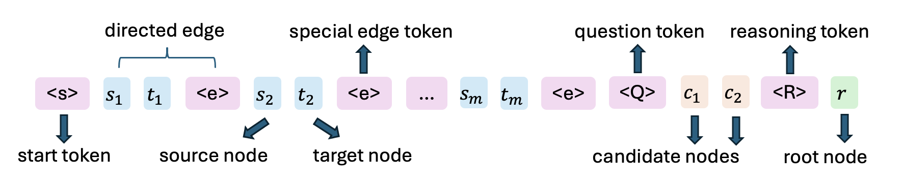
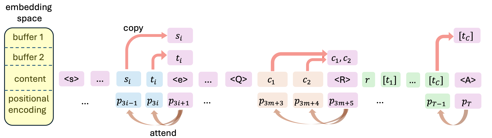
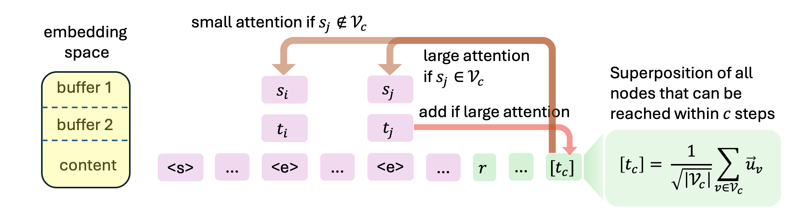
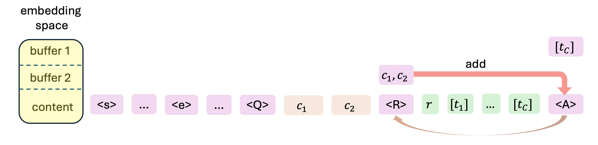
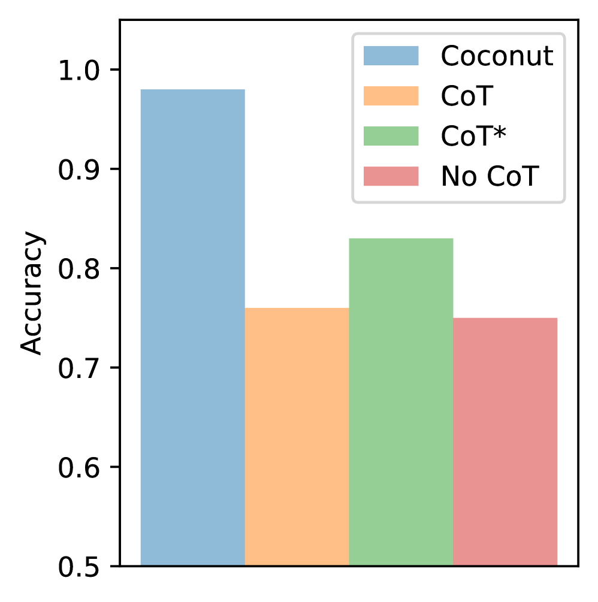
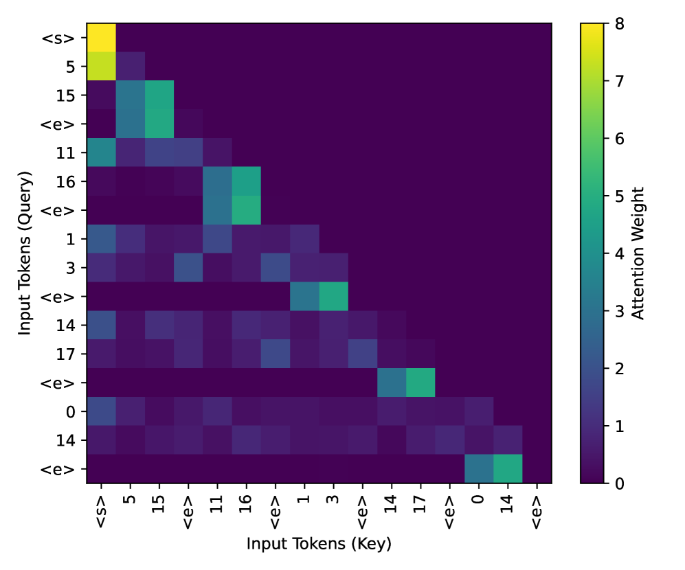

链式思维（Chain-of-Thought, CoT）让大模型在给出答案前先「想一遍」，显著提升推理能力。但传统CoT用离散token表达中间思考，每生成一个思考token就必须采样确定，只能走一条路。
2024年提出的Coconut（连续思维链）改用潜空间里的连续向量做推理，在图可达性等任务上明显超过离散CoT。问题是：为什么连续表示更好？此前一直缺乏严格的理论解释。
这篇论文从理论层面给出了答案：连续思维向量本质上是一种「叠加态」，能同时承载多条搜索路径，从而在每个自回归步内完成并行搜索。作者还用严格构造证明，两层层Transformer配连续CoT即可高效解决有向图可达性，并通过实验验证了理论构造与训练得到的模型高度吻合。
有向图可达性是一个基础图推理问题：给定一张有向图和起点，判断某个候选终点是否可达。它囊括了图灵机停机问题等理论难题，也对应知识图谱等实际场景，是检验大模型推理能力的天然试金石。
Coconut的核心观察是：连续潜思维在得出最终答案前，可能同时「记住」多个候选搜索前沿。这与离散CoT形成尖锐对比——离散思维token必须被采样（坍缩）成一个确定分支，再以自回归方式喂回模型。连续思维到底强在哪里，机制一直不清晰。

论文证明：一个两层层Transformer，配合D步连续思维（D为图的直径，即任意两点间最长路径长度），就能解决n个节点的有向图可达性问题。作为对比，常数深度Transformer配离散CoT的最优已知结果是需要O(n²)步解码（Merrill and Sabharwal, 2023a）。
直观地说，构造中每个潜思维向量都是多条合法搜索轨迹的叠加（superposition），因此能在每一步自回归推理中对图执行隐式并行搜索。这类似于量子力学里的「叠加态」：连续思维同时存储多个搜索前沿，实现高效广度优先搜索（BFS）。
相反，离散思维token可视为从叠加态中「坍缩」出的确定状态，逼迫模型在每一步确定地选一条分支，要么陷入错误的贪心搜索，要么退化为需要大量回溯的深度优先搜索，计算量陡增。
更重要的是，这一构造不依赖为特定问题甚至特定输入长度定制的特殊位置编码，而是适用于实践中广泛使用的正弦位置编码（sinusoidal）和旋转位置编码（RoPE）。
整个构造依赖一个基础模块「注意力选择器」（attention chooser）：它能根据当前位置的token类型，自动决定该注意力关注到哪个相对位置。这使得同一套参数能适配不同长度的输入。

第一层注意力包含5个注意力头，每个头都是一个注意力选择器。它们把每条边token的源节点和目标节点信息拷贝到对应位置，为后续扩展做好准备。

第二层只需要一个注意力头。当前连续思维是已可达节点集合的叠加态，它会对「源节点已在可达集合内」的出边给予高注意力，并把该边的目标节点加回当前思维——这正是一步BFS扩展：下一步的连续思维就对应可达集合的下一层。
中间的MLP层起到「滤波器」作用：把叠加态中权重过低（噪声）的节点滤除，并把其余节点权重拉平，保证下一步仍是干净均匀的叠加态。
在最终预测步，答案token会「测量」这个叠加态：比较候选终点中哪个在叠加态里的信号更强，从而输出可达性判断。整个构造与图的规模无关，参数不随具体图变化。

作者进一步证明，这套理论构造可以通过基于梯度的训练实现。模型采用GPT-2风格解码器，仅2层Transformer、隐藏维度768、8个注意力头，从零开始训练，在ProsQA数据集（需3到4跳推理的问题）上评测。
整体结果延续并强化了Coconut的发现：2层连续CoT模型在ProsQA上接近满分准确率；而离散CoT和不用CoT的基线只能解决约75%的任务（随机猜为50%）。即使换成12层、12个注意力头的大模型，离散CoT也只提升到83%，仍无法稳定求解。

为了验证「叠加态」确实存在于训练出的模型中，作者同时检查了注意力模式与连续思维的表示。第一层注意力头的关键作用本应是把边的源/目标节点拷贝到边token上——注意力图显示模型在实践中确实实例化了这个拷贝机制。
第二层负责节点扩展：每个连续思维会关注当前可达节点的所有出边。作者把边分成四类（可达边、不可达边、前沿边、最优边）统计注意力分布，发现模型正如理论预测那样，把注意力强烈集中在可达边上，且额外偏向「前沿边」（恰好距根节点i步的节点）。

对于连续思维的表示，作者计算了第i步连续思维与每个节点嵌入的内积。结果显示：i跳以内的节点相似度明显高于远处节点，且「前沿节点」比一般可达节点更靠近当前思维，说明叠加态确实在强调候选扩展前沿；「最优节点」则更靠近，这与训练数据总是呈现最优路径有关。
综合来看，训练出的模型确实实现了理论构造：第一层建立查询上下文，第二层扩展前沿，潜向量编码了可达状态集合的软性并行表示。
一个有趣的发现是，模型会给「最优边/最优节点」分配不成比例的注意力，像是一种带优先级的搜索策略。一种假设是这源于多阶段课程学习在每一步都显式引导了CoT最优解。
为验证，作者引入另一种监督方式Coconut-BFS：第i阶段的监督token不是CoT解中的第i个节点，而是从「恰好距根i跳的前沿节点」中均匀随机采样。其余超参不变。
结果显示Coconut-BFS在ProsQA上同样接近满分，与原版Coconut持平。两种监督方式收敛到相似的探索策略，即便Coconut-BFS从未显式引导最优节点。反过来，原版Coconut虽只在中间阶段用最优节点训练，仍会给非最优前沿节点更高权重，在锁定解之前隐式执行了一轮广度优先扩展。这种从训练动力学角度解释探索行为涌现的机制，作者留作未来工作。
论文围绕图可达性问题，系统回答了「连续思维链为何能提升大模型推理能力」。作者给出了一个两层层Transformer的严格理论构造：用D步连续思维即可高效解决n节点、直径D的有向图可达性，而离散CoT的最优已知结果是O(n²)步。
构造揭示，连续思维强大推理能力的核心在于「同时编码多条搜索轨迹的叠加态」。大量实验验证了理论构造与训练动力学得到的求解高度一致。值得关注的未来方向包括：推导离散CoT步数的下界以严格证明表达力分离、从训练动力学角度理解确定性搜索轨迹演示下探索行为的涌现、以及连续空间推理在更一般场景下的优势。
参考：https://arxiv.org/html/2505.12514v3